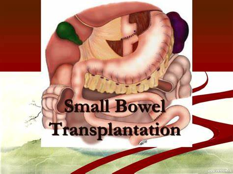
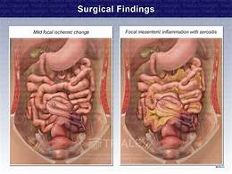
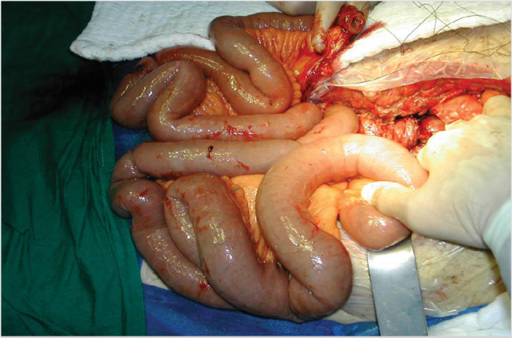

SMALL BOWEL
Small bowel transplantation is a life-saving surgery for patients with intestinal failure. The biggest problem in intestinal transplantation is graft rejection. Graft rejection is the main reason for morbidity and mortality. Rejection has a negative effect on the survival of the graft. While 50%–75% of small bowel transplantation patients experience acute rejection, chronic rejection occurs in approximately 15% of patients. Immune monitoring is crucial after small bowel transplantation. Unlike other types of transplantation, there are no non-invasive or reliable markers to predict rejection in small bowel transplantation. The diagnosis of AR is confirmed by clinical symptoms, endoscopic appearance, and pathological specimens taken by endoscopy. Thus, histopathological examinations obtained by protocol biopsies remain as the gold standard for intestinal graft monitoring; however, biopsies have some complications, especially in small grafts. In addition to the high complication rate, biopsies are non-diagnostic; thus, multiple biopsies should be performed to exclude rejection. Therefore, auxiliary assays, such as measurements of citrulline and calprotectin in the blood, cytofluorographic examination of peripheral blood immune cells, cytokine profiling, and distinct gene-set-change measurements, are increasingly being used in small bowel transplantation. Developments in the understanding of genes seem to be promising that limited gene sets, taken from blood or from intestinal biopsies, will enhance pathological diagnosis. Bone marrow mesenchymal stem cell transplantation with SBT and tissue engineering are also promising procedures.
Keywords:
Small bowel transplantation, intestinal transplantation, stem cell transplantation, small bowel insufiency, short bowel syndrome
Go to:

INTRODUCTION
Small bowel transplantation (SBT) has developed slower and has been performed less than other solid organ transplantations. However, it is the most effective and life-saving procedure for patients with intestinal failure who develop complications related to parenteral nutrition. The annual number of SBTs is less than that of all other types of solid organ transplantations. Although the number of SBTs has been decreasing in the United States since 2007, because of bowel rehabilitation programs and recent developments in surgical techniques such as tapering enteroplasties, the number of SBTs has substantially increased in the last 5 years in Europe, China, and Japan (1). It is estimated that 2 or 3 persons per million per year experience intestinal failure, and 15% of them become candidates for SBT (2). The mortality rate is around 40% in 5 years in patients having less than 50 cm of healthy small bowel remaining. Infections and/or thrombosis of vessels and liver disease developing within 2 years after SBT are the most common reasons of mortality.
Small bowel transplantation is a sophisticated procedure for patients with desperate clinical conditions.
It covers a number of surgical procedures depending on organs to be transplanted, but the main procedure is the transplantation of the small bowel. Although there are different classifications for the procedure, the most common one classifies it into four groups, according to the inclusion of the liver and/or the stomach in the graft: isolated, liver–intestinal, multivisceral, and modified multivisceral transplantation (3). Although combined liver and SBT used to be the most common procedure in the past, the rate this type of SBT has decreased from 68% to 39% from 2007 to 2011. The number of isolated small bowel transplantations has been increasing due to early referral to the transplantation units (4). SBT patients need more intense immune suppression protocols than other solid organ transplantation patients due to large size of the graft and the strong immune response usually evoked. Thus, opportunistic infections and neoplastic diseases are seen more commonly in SBT than in other solid organ transplantations. Besides, because of the large size of tissue transplanted, graft versus host disease (GVHD) is also more common in SBT than in other solid organ transplantations.
Currently, patients who experience complications in parenteral nutritional therapy are candidates for SBT.
Nowadays, SBT is not indicated for patients who are dependent on parenteral nutrition, having no complications. Indications for STB are thrombosis of two of the six major venous accesses, episodes of catheter-related infections (two or more per year, fungemia, shock, or respiratory failure), liver disease, alterations of growth and development in children, and refractory electrolyte changes.
Go to:
CLINICAL AND RESEARCH CONSEQUENCES
Surgical Techniques
Some other abdominal organs can be transplanted with a small intestinal graft, depending on the pathology. Patients with mild liver disease, revealing no signs of portal hypertension and mild hepatic fibrosis on liver biopsy, may receive an isolated intestinal graft and do not need a liver graft transplantation. On occurrence of dysmotility of the foregut with apparent problems, the stomach can be included in the graft. The preferred technique is harvesting and implanting the liver, duodenum, head of pancreas, and small bowel with bile ducts en bloc as a composite graft without damaging the vascular or other structural connections of the organs.
The organs can also be harvested from the donor separately and transplanted individually, which is known as non-composite combined liver and SBT. The organs to be transplanted are decided according the underlying disease, presence and severity of liver disease, condition of other organs, and the number of previous abdominal surgeries.
An isolated small bowel graft (Figure 1) is indicated in the patients with intestinal failure without a severe hepatic dysfunction. The severity and reversibility of the liver disease is diagnosed by liver biopsy. A recent study claimed that bilirubin levels, platelet count, and albumin levels in children receiving parenteral nutrition show a good correlation with the severity of the hepatic disease (5). Occurrence of bridging fibrosis or cirrhosis indicates that the liver should be added to the intestinal graft. In order to harvest the liver and intestine en bloc, the pancreaticoduodenal arc should be included in the graft. This avoids the dissection of hilar structures, which can be difficult in a donor of pediatric age. Alternatively, liver and intestine can be implanted separately. Thus, in case of severe rejection, the intestinal graft can be explanted easily without removing the hepatic graft. However, separate grafts require multiple vascular anastomosis and biliary reconstruction which cause higher risks of complications.
An external file that holds a picture, illustration, etc.
Object name is UCD-33-3-135-g01.jpg
Figure 1
Isolated intestinal graft
The superior mesenteric artery is anastomosed to the aorta. Venous anastomosis is performed between the superior mesenteric vein and the inferior vena cava (Figure 2) or the mesenteric portal system. Anastomosis to the portal system is more physiologic and has some possible immunologic advantages, but accessing the recipient’s mesenteric portal system is technically more challenging than systemic drainage. In patients with mild portal hypertension with low platelet counts, absence of gastroesophageal varices, and intrahepatic cholestasis with moderate splenic enlargement, venous drainage of the isolated small bowel can be performed into the vena cava. Although the cumulative episodes of infection were higher in patients with drainage into vena cava where the protective effect of the liver is by-passed, a survival difference could not be achieved (6). In practice, anastomosis to the mesenteric superior vein is seldom associated with major problems in terms of outcome; therefore, it is performed more often because of technical simplicity. To observe the bowel endoscopically and obtain biopsies facilitating the diagnosis of rejection and perfusion disorders, ileostomy is performed in all types of SBTs.
An external file that holds a picture, illustration, etc.
Object name is UCD-33-3-135-g02.jpg
Figure 2
Mesenteric venous and arterial anastomosis of the small intestinal graft
Pediatric patients more commonly require combined liver and SBT compared with adults, due to irreversible liver damage, which is more often seen in the pediatric population under parenteral nutrition. However, both grafts are scarcely available for pediatric patients due to size problems. According to the US data, 74% of patients for intestinal transplantation need the combined liver and intestinal graft transplantation (7).
 Progression of the allocation system and early referral to SBT can help solve this problem.
Inclusion of the colon and spleen to intestinal grafts is controversial.
Patients who receive an intestinal graft without the ileocecal valve usually do not have well-formed stools and are more likely to become dehydrated.
It was thought that inclusion of the colon in small intestine grafts increases death rates and the risk of graft failure; therefore, this was previously avoided. However, recent studies have shown that inclusion of the colon does not increase morbidity, mortality, and bloodstream infections, and has benefits especially in pediatric patients (8).
Patient’s liver, spleen, and pancreaticoduodenal complex should be preserved whenever possible. Different modifications can be applied for patients who need multivisceral transplantations with intact hepatic functions, especially those with Gardner and pseudo-obstruction syndromes.
Sparing the native spleen also has potential advantage of reduced risk of post-transplant lymphoproliferative disorders. After showing the beneficial effect of spleen transplantation in promoting tolerance in animal experiments, a recent research demonstrated that adding the spleen to the multivisceral transplantation graft yielded better outcomes in terms of low acute rejection (AR), without altering the incidence of GVHD (9, 10). Implantation of the donor spleen with liver–intestine graft is advantageous with reduced infection rate and enhanced mixed chimerism. Harvesting the distal esophagus within the multivisceral graft simplifies the transplantation procedure of foregut organs.
Although microendoscopy is not widely used, it helps visualize the transplant serosal surface and monitor mucosal blood flow of the graft during the surgery. This method is also found to be very sensitive during the postoperative and intraoperative period (11). Thus, this method helps assess the viability of the graft. However, the procedure is technically demanding and not easy to perform in a duration of 1 or 2 hours.
Loss of abdominal flexibility in patients with SBT due to massive adhesions related to multiple